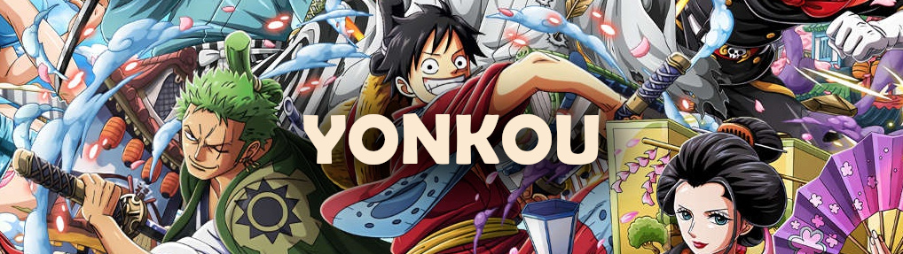
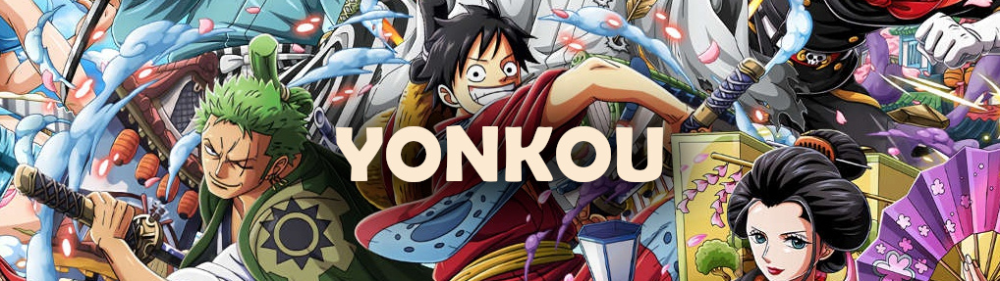

SAGA YONKOU
 

Chegamos a saga mais atual de One Piece, intitulado Yonkou. Uma aliança chamada Ninja-Pirata-Mink-Samurai é formada para derrubar Kaido. É quando Luffy entra em ação, se envolve com um Yonko chamado Big Mom e precisa embarcar numa missão de resgate de seu amigo, Sanji.
Arcos da Saga:
- Arco Zou: episódios 751 ao 779;
- Arco Whole Cake: episódios 783 ao 877;
- Arco Reverie: episódios 878 ao 889;
- Arco País de Wano: episódios 890 ao 894;
- Arco Rei do Ácido Carbônico: episódios 895 e 896;
- Arco País de Wano (continuação): episódios 897 ao 906;
- Arco País de Wano (continuação): episódios 908 ao 1028;
- Arco País de Wano (continuação): episódio 1031 ao 1039 + SP-5 (atualmente).